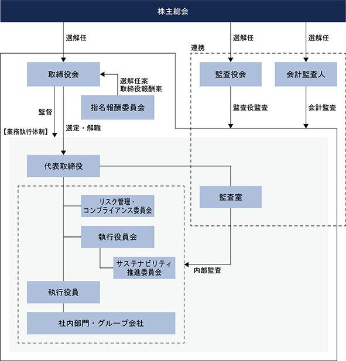

第1回新株予約権（2015年4月30日 臨時株主総会決議）
第3回新株予約権（2016年3月4日 臨時株主総会決議）
該当事項はありません。
③ 【その他の新株予約権等の状況】
該当事項はありません。
該当事項はありません。
(注)1. 2020年8月26日開催の取締役会決議により、2020年9月14日付で、普通株式１株につき30株の割合で株式分割を実施しています。
2. 新株予約権の行使により、発行済株式総数が237,536株、資本金が69百万円、資本準備金が69百万円増加しています。
3. 新株予約権の行使により、発行済株式総数が389,168株、資本金が94百万円、資本準備金が94百万円増加しています。
4. 新株予約権の行使により、発行済株式総数が96,252株、資本金が27百万円、資本準備金が27百万円増加しています。
5. 新株予約権の行使により、発行済株式総数が96,252株、資本金が27百万円、資本準備金が27百万円増加しています。
2023年12月31日現在
(注) 1．上記の他、当社は、自己株式441,558株を保有しています。
2. 2023年10月20日付で公衆の縦覧に供されている大量保有報告書(変更報告書)において、FMR LLCが2023年10月13日現在で以下のとおり株式を所有している旨が記載されているものの、当社として2023年12月31日現在における実質所有株式数の確認ができませんので、上記大株主の状況には含めていません。なお、大量保有報告書の内容は以下のとおりです。
3. 2023年6月22日付で公衆の縦覧に供されている大量保有報告書(変更報告書)において、Jupiter Asset Management,Limitedが2023年6月15日現在で以下のとおり株式を所有している旨が記載されているものの、当社として2023年12月31日現在における実質所有株式数の確認ができませんので、上記大株主の状況には含めていません。なお、大量保有報告書の内容は以下のとおりです。
4. 2023年4月21日付で公衆の縦覧に供されている大量保有報告書（変更報告書）において、Capital Research and Management Company及びその共同保有者であるCapital International Inc、Capital International Sarl、キャピタル・インターナショナル株式会社、Capital Group Investment Management Pte. Ltd.が2023年4月14日現在でそれぞれ以下のとおり株式を所有している旨が記載されているものの、当社として2023年12月31日現在における実質所有株式数の確認ができませんので、上記大株主の状況には含めていません。なお、大量保有報告書の内容は以下のとおりです。
(注)1.「完全議決権株式(その他)」欄の普通株式には、役員向け株式給付信託、従業員向け株式給付信託及び従業員持株会支援信託の信託財産として、株式会社日本カストディ銀行(信託口)が所有している当社株式281,300株(議決権2,813個)が含まれています。
2.「単元未満株式」欄の普通株式には、役員向け株式給付信託、従業員向け株式給付信託及び従業員持株会支援信託の信託財産として、株式会社日本カストディ銀行(信託口)が所有している当社株式28株が含まれています。
3.「単元未満株式」欄の普通株式には、当社所有の自己株式58株が含まれています。
(注)1. 上記の他、当社は、単元未満の自己株式58株を保有しています。
2. 役員向け株式給付信託、従業員向け株式給付信託及び従業員持株会支援信託の信託財産として、281,328株を株式会社日本カストディ銀行(信託口)へ拠出しています。
1.パフォーマンス・シェア・ユニット及びリストリクテッド・ストック・ユニット
(1) パフォーマンス・シェア・ユニット及びリストリクテッド・ストック・ユニットの概要
当社は、2022年3月30日開催の株主総会決議に基づき、社外取締役以外の取締役及び委任型執行役員に対する業績連動型株式報酬制度として、業績目標の達成等を条件とした事後交付による株式報酬（パフォーマンス・シェア・ユニット）及び社外取締役に対しては、役位に応じた固定型株式報酬として、在籍の継続を条件とした事後交付による株式報酬（リストリクテッド・ストック・ユニット）から構成される新たな株式報酬制度を2022年度より導入しています。また、会社が対象者として認めた社員（以下、「幹部社員」といいます。）についても、業績連動型株式報酬制度として、業績目標の達成等を条件とした事後交付による株式報酬（パフォーマンス・シェア・ユニット）を2022年度より導入しています。当株式報酬制度は、当社が制定した株式報酬規程に基づき、取締役、委任型執行役員及び幹部社員にユニットを付与し、そのユニットに応じて、取締役、委任型執行役員及び幹部社員に当社が金銭報酬債権を付与し、その金銭報酬債権を現物出資財産として当社に出資させることにより、株式を給付する仕組みです。
(2) 取締役、委任型執行役員及び幹部社員に給付する予定の株式の総数
取締役、委任型執行役員：3事業年度を対象として上限120,000株
幹部社員 ：3事業年度を対象として上限 30,000株
(3) 本制度による受給権その他の権利を受けることができる者の範囲
当社取締役、委任型執行役員及び幹部社員のうち受給要件を満たす者
2.役員向け株式給付信託制度
(1) 役員向け株式給付信託制度の概要
当社は、2016年12月21日開催の株主総会決議に基づき、取締役(非業務執行取締役除く)及び執行役員に対する業績連動型株式報酬制度として「役員向け株式給付信託」を導入しています。役員向け株式給付信託制度の導入に際し、「役員向け株式給付信託株式給付規程」を制定しており、当社は制定した役員向け株式給付信託株式給付規程に基づき、将来給付する株式を予め取得するために、信託銀行に金銭を信託し、信託銀行はその信託された金銭により当社株式を取得しました。役員向け株式給付信託制度は、役員向け株式給付信託株式給付規程に基づき、取締役及び執行役員にポイントを付与し、そのポイントに応じて、取締役及び執行役員に株式を給付する仕組みです。
なお、当制度によるポイント付与期間は、上記1.「パフォーマンス・シェア・ユニット及びリストリクテッド・ストック・ユニット」が導入されたため、既に終了しています。
(2) 取締役及び執行役員に給付する予定の株式の総数
62,557株
(3) 本制度による受益権その他の権利を受けることができる者の範囲
当社取締役及び執行役員のうち受益者要件を満たす者
3. 従業員(管理職)向け株式給付信託制度
(1) 従業員(管理職)向け株式給付信託制度の概要
当社は、株価及び業績向上への従業員の意欲や士気を高めることを目的として当社及び当社子会社の従業員に対して自社の株式を給付するインセンティブ・プラン「従業員向け株式給付信託」を導入しています。
従業員向け株式給付信託制度の導入に際し、「従業員向け株式給付信託株式給付規程」を制定しており、「従業員向け株式給付信託株式給付規程」に基づき、将来給付する株式を予め取得するために、信託銀行に金銭を信託し、信託銀行はその信託された金銭により当社株式を取得しました。従業員向け株式給付信託制度は、従業員向け株式給付信託株式給付規程に基づき、従業員にポイントを付与し、そのポイントに応じて、従業員に株式を給付する仕組みです。
なお、当制度によるポイント付与期間は、既に終了しています。
(2) 従業員に給付する予定の株式の総数
163,961株
(3) 本制度による受益権その他の権利を受けることができる者の範囲
一定の資格等級以上の当社従業員のうち受益者要件を満たす者
4. 従業員持株会支援型信託制度
(1) 従業員持株会支援型信託制度の概要
当社は、当社の従業員に対する福利厚生の拡充及び株主としての資本参加促進を通じて従業員の勤労意欲を高め、当社の継続的な発展を促すことを目的とした制度として「従業員持株会支援信託」の導入をしています。
従業員持株会支援信託制度では、当社が信託銀行に従業員持株会支援信託を設定します。従業員持株会支援信託は、将来にわたり本件持株会が取得すると見込まれる規模の当社株式を、借入金を原資として当社から第三者割当によって予め取得します。その後、従業員持株会支援信託は本件持株会に対して継続的に当社株式を売却します。信託終了時点で従業員持株会支援信託内に株式売却益相当額が累積した場合には、当該株式売却益相当額が信託収益として受益者要件を充足する者に分配されます。また、当社は従業員持株会支援信託が当社株式を取得するための借入に対して保証をしているため、従業員持株会支援信託内に株式売却損相当額が累積し、信託終了時点において従業員持株会支援信託内に当該株式売却損相当額の借入金残債がある場合は、金銭消費貸借契約の保証条項に基づき当社が当該残債を弁済するため、従業員の負担はありません。
なお当制度は、2024年に清算手続きを行い終了する予定です。
(2) 従業員に給付する予定の株式の総数
提出日時点において従業員に給付する株式はありません。
(3) 本制度による受益権その他の権利を受けることができる者の範囲
本持株会の会員又は会員であった者のうち受益者要件を満たす者
該当事項はありません。
該当事項はありません。
(注) 当期間における取得自己株式には、2024年3月1日から有価証券報告書提出日までの単元未満株式の買取りによる株式数は含めていません。
(注)1. 当期間における保有自己株式数には、2024年3月1日から有価証券報告書提出日までの取締役会決議による取得及び単元未満株式の買取りによる株式数は含めていません。
2. 保有自己株式数は、受渡日基準により記載しています。
3. 保有自己株式数には、役員向け株式給付信託、従業員向け株式給付信託及び従業員持株会支援信託の信託財産として、株式会社日本カストディ銀行（信託口）が所有する株式数（当事業年度281,328株、当期間226,518株）は含まれていません。
当社は、事業活動により創出される付加価値の最大化とその適正な分配を通じて、全てのステークホルダーの共感を得ながら持続的な企業価値の成長を図ります。
株主還元につきましては、持続的かつ安定的な配当を行うとともに、株式市場動向や資本効率等を考慮した機動的な自己株式の取得も適宜行うことで、連結総還元性向は原則50％を目指し、成長投資資金の留保が必要な場合も、連結総還元性向は30％以上を目指します。
上記方針及び財務状況等を勘案して、第52期事業年度の配当につきましては、１株当たり170円の配当（うち１株当たり中間配当85円）を予定しています。
次期の配当につきましては、１株当たり年間配当金170円（中間配当金85円、期末配当金85円）を予定しています。
また、当社は中間期末日及び期末日を基準として、年2回の配当実施を原則としています。これらの配当の決定機関は、中間配当については取締役会、期末配当については株主総会です。
当社は会社法第454条第5項に規定する中間配当を行うことができる旨を定款に定めています。
基準日が第52期事業年度に属する剰余金の配当は、以下のとおりです。
(注)1. 2023年8月9日取締役会決議による配当金の総額には、信託が保有する自社の株式に対する配当金26百万円が含まれています。
2. 2024年3月26日定時株主総会決議予定の配当金の総額には、信託が保有する自社の株式に対する配当金23百万円が含まれています。
①コーポレート・ガバナンスに関する基本的な考え方
当社においてコーポレート・ガバナンスとは、当社及びその子会社で構成される当社グループが、その企業価値を持続的・自律的に向上させ、株主・お客様・取引先様及び従業員など当社に関わる全てのステークホルダーの利益に資する、また持続可能な環境・社会の実現のための実効性のある仕組みを指し、これを構築、推進していきます。
当社は、当社グループの根本的な存在意義を表す経営理念を定め、経営理念の実現により当社を取り巻くステークホルダーの期待に応えていきます。
当社グループの経営理念は、以下の3つのスローガンに集約されています。これらは、当社グループが何のために存在し、どのような企業であろうとしているのかを表した、創業時から変わらない考え方です。
・創造の喜びを世界にひろめよう
・BIGGESTよりBESTになろう
・共感を呼ぶ企業にしよう
②企業統治の体制の概要及び当該企業統治の体制を採用する理由
当社は、会社法上の機関設計として監査役会設置会社を選択し、取締役による監督及び幅広い調査権限を持つ監査役の監査により、適正かつ適切な業務執行を担保しています。また、取締役会を補完する指名報酬委員会を設置し、重要な人事について透明性・公正性を担保します。
当社の企業統治の体制は提出日現在で次のとおりとなっています。
(取締役会)
取締役会は取締役7名（うち社外取締役4名）で構成され、経営の基本方針の策定、中期経営計画の策定、事業ポートフォリオに関する基本方針、内部統制システムの構築等のほか、法令、定款、社内規程等で定められた経営の重要事項の意思決定及び取締役の経営執行状況の報告を行っています。なお、毎月定時取締役会を開催し、緊急の決議事項がある場合等は臨時又は書面での開催・決議を行います。
(監査役会)
監査役会は4名の監査役（うち社外監査役4名）で構成されており、毎月定時での開催を行っています。当該監査役会では、監査役監査計画、監査役会監査報告書を策定しているほか、主として常勤監査役が監査計画に基づく監査の実施状況等の報告を行い、また取締役会議案に関する協議等を実施しています。なお、必要に応じて臨時での開催も行っています。また、監査役は、重要な意思決定の過程及び業務執行状況を把握するため、取締役会のほか社内の重要な会議に出席するほか、子会社への往査等の実施により取締役の職務執行における監督に努めています。
（指名報酬委員会)
独立社外取締役を過半数とする任意の指名報酬委員会を設置し、取締役、監査役、社長及び執行役員の選解任ならびに報酬の決定に対する透明性と公正性を確保しています。
（リスク管理・コンプライアンス委員会）
社長、業務執行取締役、執行役員、当社グループの主要幹部社員、監査役を構成員とする「リスク管理・コンプライアンス委員会」を設置し、当社グループにおけるリスク管理またはコンプライアンス上、特に重要な案件について、報告またはその対応策等を周知・承認しています。
（執行役員会）
すべての執行役員を構成員とする執行役員会を設置し、取締役会上程事項および業務執行における重要事項について審議・検討、また重要な情報の共有を行っています。
（サステナビリティ推進委員会）
すべての執行役員を構成員とするサステナビリティ推進委員会を執行役員会の附属機関として設置し、ESGやSDGsの概念を包括するサステナビリティ(持続可能性)を高める当社活動を推進するとともに、取締役会への定期報告を行うことで経営による監督を確保しています。
各会議の構成員等は次のとおりです。
◎議長・委員長、○構成員、△出席者
当社の企業統治の模式図は、次のとおりです。

③企業統治に関するその他の事項
（a）内部統制システム
当社は、当社グループの業務の適正を確保するための体制を、以下のとおり、当社取締役会において決議しています。
1． 当社グループの取締役・使用人の職務の執行が法令及び定款に適合することを確保するための体制
(1) 当社グループにおけるコンプライアンス遵守の基本的指針となる「ローランド・グループ コンプライアンスガイドライン」を定め、これをグループ内に周知し法令遵守の徹底を図る。
(2) 当社執行役員、監査役及び子会社の主要な幹部で構成する「リスク管理・コンプライアンス委員会」を設置し、当社グループ全体のコンプライアンス推進計画の策定、グループ全体の重点管理法令の特定など当社グループ全体のコンプライアンスを推進する。
また、当社グループにおける地域ごとのコンプライアンス推進担当を設け、当該担当が「リスク管理・コンプライアンス委員会」の方針に従い地域の実状にあわせたコンプライアンス推進計画を策定し実行する。
これらにより、当社グループ全体のコンプライアンスを推進する。
(3) 当社の経営者、従業員の法令違反や不正行為又はそのおそれがある行為について疑念を伝えることができるように、当社においては内部通報制度を設けるとともに、子会社従業員が子会社経営者の法令違反や不正等についての疑念を伝えることができるよう、グローバル内部通報制度を設け、グループ全体の自浄作用を高める。
(4) 当社内部監査部門は、当社グループ全体の監査をつかさどるとともに、毎年内部監査計画及び内部監査の結果を取締役会及び監査役会に報告し、取締役会・監査役会と内部監査部門の連携を図ることにより、当社グループ全体の内部監査の実効性を高める。
2. 取締役の職務の執行に係る情報の保存及び管理に関する体制
(1) 株主総会、取締役会その他重要な会議の議事録及び決裁書など取締役の職務執行にかかる情報は、法令及び「文書保存規程」その他社内規程に基づいて文書化し保存・管理する。
(2) 当社の取締役及び監査役は、その職務執行に必要な場合、当該文書を閲覧することができる。
3. 当社グループの損失の危険の管理に関する規程その他の体制
(1) 「リスク管理基本規程」を定め、当社グループを取り巻くさまざまなリスクに対して的確な管理体制を構築する。
(2) 「リスク管理・コンプライアンス委員会」は、当社グループを取り巻くリスクを、その発生確率と影響度を分析・評価のうえ対応方針を定める。主要なリスクは、取締役会において定期的にレビューし、当社グループ全体のリスクマネジメントを行う。
(3) 損失の発生の可能性が顕在化したリスクは、当社執行役員及び子会社からの報告に基づき、執行役員で構成される執行役員会に報告し、その対応の検証及び再発防止策の周知・徹底を行う。
(4) 緊急時には社長が危機管理体制における最高責任者として、事前に定められた事業継続計画に基づき、対応組織を組成し、状況把握、対応を行う。
4. 当社グループの取締役の職務執行が効率的に行われることを確保する体制
(1) 当社は執行役員制度を採用し、取締役を少人数に保ち、取締役会における議論の充実と迅速な意思決定を行う。
(2) 取締役会は原則、毎月1回開催し、グループ経営の基本的な方針と戦略の決定、重要な業務執行に係る事項の決定、並びに取締役の業務執行の監督を行う。
(3) 当社は、取締役会において当社グループの中・長期経営計画及び年度計画を策定する。当社及び子会社は、当該計画に沿って業務を遂行し、定期的に遂行状況をレビューする。
(4) 当社は機能別に執行役員を配置し、子会社を含めたグループ全体の業務執行を機能ごとに管理監督できる体制を構築することにより、グループ経営を効率的に行う。
(5) 当社に関する事項の承認権限は「決裁規程」において明確に定める。また、子会社に関する事項のうち当社において承認が必要な事項は「関係会社管理規程」で明確に定める。これにより、当社グループ全体の意思決定の責任の明確化と職務の効率化を図る。
5. 子会社の取締役の職務執行に係る当社への報告に関する体制
(1) 子会社の営業成績や財務状況等子会社の運営に関する事項、及びリスクの発生等グループに影響を及ぼす事項を「関係会社管理規程」において、子会社が当社の担当部門に報告する事項として定め、これを周知・徹底する。
(2) 当社の経営企画部門は、子会社からの報告が的確かつ適切に行われているか監督を行い、報告体制の改善、指導を継続して行う。
6. 監査役監査の実効性を担保するための体制
(1) 監査役は、当社内部監査部門の要員に対し、その職務の補助者として監査業務の補助を行うよう命じることができる。
(2) 内部監査部門の要員の人事評価、任命、異動は監査役の同意を得ることとし、取締役からの独立性を確保する。
(3) 内部監査部門の要員が、監査役の職務を補助するに際しては、もっぱら監査役の指揮命令に従う。
(4) 監査役はいつでも、当社または子会社の取締役及び使用人に対し、報告を求めることができる。
(5) 法令又は定款に違反する行為（そのおそれがある行為を含む）、会社に著しい損害を招くおそれがある事実があった場合は、直ちに監査役に報告する。
(6) 内部通報制度において通報があった場合、その事実及び内容は監査役に報告する。
(7) 当社は、監査役に対して報告または内部通報を行った者に対し、不当な処分・扱いがなされないための仕組みを整備する。
(8) 監査役の職務に必要な費用はあらかじめ予算計上する。また、監査業務に関し緊急または臨時に支出した費用が生じたときは、当社が負担する。
(9) 監査役は、社内の重要な会議に出席し意見を述べることができる。
(10) 監査役は、社長と定期的にまたは必要に応じて随時会合をもち、監査上の重要な課題について意見交換等を行う。
(11) 監査役は、会計監査人と定期的に会合をもち、会計に関する事項について意見交換等を行う。
(ｂ)責任限定契約
当社は、定款及び会社法第427条の規定に基づき、取締役（業務執行取締役等であるものを除く）及び監査役の全員と、会社法第423条第1項の損害賠償責任について職務を行うにつき善意かつ重大な過失がないときは、法令が規定する最低責任限度額を限度とする契約を締結しています。
(c)役員等賠償責任保険契約
当社は、会社及び国内海外子会社の取締役、監査役、執行役員及び相続人、管理職・監督者の地位にある従業員を被保険者として役員等賠償責任保険契約を締結しています。保険料は特約部分も含め会社が全額負担しており、被保険者の実質的な保険料負担はありません。
当該保険契約では、被保険者である役員等がその職務の執行に関し責任を負うこと、または、該当責任の追及にかかる請求を受けることによって生ずることのある損害について、填補することとされています。ただし法令違反の行為のあることを認識して行った行為に起因して生じた損害は填補されないなど、一定の免責事由があります。
(d)取締役の定数
当社の取締役は、15名以内とする旨を定款で定めています。
(e)取締役の選任の決議要件
当社は、取締役の選任決議について、議決権を行使することができる株主の議決権の3分の1以上を有する株主が出席し、その議決権の過半数をもって行う旨、及び累積投票によらない旨を定款で定めています。
(f)中間配当の決定機関
当社は、機動的な配当政策を遂行するため、取締役会の決議によって会社法第454条第5項に定める剰余金の配当をすることができる旨を定款で定めています。
(g)自己株式の取得
当社は、経営環境の変化に対応した機動的な資本政策の遂行を確保するため、会社法第165条第2項の規定により、取締役会の決議によって自己の株式を取得することができる旨を定款に定めています。
(h)株主総会の特別決議要件
当社は、株主総会における特別決議の定足数の確保をより確実にするため、会社法第309条第2項に定める決議は、議決権を行使することができる株主の議決権の3分の1以上を有する株主が出席し、その議決権の3分の2以上をもって行う旨を定款で定めています。
④当事業年度における提出会社の取締役会及び指名報酬委員会の活動状況
（a）取締役会
当事業年度において当社は取締役会を14回開催しており、個々の取締役の出席状況については次のとおりです。
取締役会における具体的な活動として、事業状況や業績進捗等の定期報告に加え、予算・決算の承認や株主総会の招集等の定期的に決議が必要となる事項、事業運営や経営政策に関する重要事項等（中期経営計画、本社移転計画、システム投資、コンプライアンス・リスク管理等）について議論を行いました。
（b）指名報酬委員会
当事業年度において当社は指名報酬委員会を7回開催しており、個々の委員の出席状況については次のとおりです。
指名報酬委員会における具体的な活動として、役員人事の選定に関する事項、役員報酬に関する事項、社長後継者計画に関する事項のほか、指名報酬委員会の役割や実効性向上等に関する議論を行いました。
①役員一覧
1. 2024年3月5日（有価証券報告書提出日）現在の当社の役員の状況は、以下のとおりです。
男性
(注) 1．取締役 生沼 寿彦、ブライアン・K・ヘイウッド、片山 幹雄、山本 宏は社外取締役です。
2．監査役 牧野 正人、今石 義人、石原 一裕、森住 曜二は、社外監査役です。
3．取締役の任期は、2023年3月29日開催の定時株主総会終結の時から選任後1年以内に終了する事業年度のうち最終のものに関する定時株主総会の終結の時までです。
4．監査役の任期は、2020年9月14日開催の臨時株主総会終結の時から選任後4年以内に終了する事業年度のうち最終のものに関する定時株主総会の終結の時までです。
5．監査役の任期は、2023年3月29日開催の定時株主総会終結の時から選任後4年以内に終了する事業年度のうち最終のものに関する定時株主総会の終結の時までです。
6．当社は、法令に定める監査役の人員を欠くことになる場合に備え、会社法第329条第3項に定める補欠監査役1名を選任しています。補欠監査役の略歴は以下のとおりです。
2. 2024年3月26日開催予定の定時株主総会の議案（決議事項）として、「取締役7名選任の件」及び「監査役2名選任の件」を提案しています。
当該議案が承認可決された場合、当社の役員の状況は以下のとおりとなります。なお、役職名及び略歴については、当該定時株主総会の直後に開催予定の取締役会の決議事項の内容を含めて記載しています。
男性10名 女性-名(役員のうち女性の比率-％)
(注) 1．取締役 生沼 寿彦、ブライアン・K・ヘイウッド、片山 幹雄、山本 宏は、社外取締役です。
2．監査役 今石 義人、石原 一裕、森住 曜二は、社外監査役です。
3．取締役の任期は、2024年3月26日開催の定時株主総会終結の時から選任後1年以内に終了する事業年度のうち最終のものに関する定時株主総会の終結の時までです。
4．監査役の任期は、2023年3月29日開催の定時株主総会終結の時から選任後4年以内に終了する事業年度のうち最終のものに関する定時株主総会の終結の時までです。
5．監査役の任期は、2024年3月26日開催の定時株主総会終結の時から選任後4年以内に終了する事業年度のうち最終のものに関する定時株主総会の終結の時までです。
②社外役員の状況
当社は、東京証券取引所が定める独立性基準を踏まえ、独立社外役員の基準を以下のとおり策定しています。
社外役員の独立性基準
1．本人が、現在又は過去1年間において下記に該当しないこと。
（1）当社の主要な取引先、その業務執行者（※1）
（2）当社を主要な取引先とする者、その業務執行者（※2）
（3）当社から役員報酬以外に多額の金銭その他の財産を得ているコンサルタント、会計専門家又は法律専門家
（当該財産を得ている者が法人、組合等の団体である場合は当該団体に所属する者）（※3）
（4）当社の主要株主又は当該主要株主が法人である場合には、当該法人の業務執行者（※4）
（5）当社が多額の寄附を行っている者
（当該寄附を受けている者が法人、組合等の団体である場合は、その業務執行者）（※5）
（6）当社と社外役員の相互就任の関係にある先の業務執行者
2．本人が、現在において当社又は当社子会社の業務執行者である者、又は過去10年間（ただし、過去10年内のいずれかの時において当社又は当社子会社の非業務執行取締役又は監査役であったことのある者にあっては、それらの役職への就任の前10年間）において、当社又は当社子会社の業務執行者であった者に該当しないこと。
3．本人の配偶者、二親等以内の親族が、現在又は過去1年間において以下各号に該当しないこと。ただし、当該配偶者、親族が取引先等において重要なものである場合に限る。（※6）
（1）上記 1.（1）から（4）に掲げる者
（2）当社又は当社子会社の業務執行者
4．上記のほか、本人と当社との間に継続的な取引が存在する等一般株主と利益相反が生じるおそれがある特段の事情がないこと。
5．前各項に定める形式要件にかかわらず、実質的に一般株主と利益相反が生じるおそれがないと判断できるときは、その理由を明らかにすることによって独立性を認めることができる。
※1．「当社の主要な取引先」とは、以下いずれかに該当する取引先をいう。
①当社製品の販売先又は仕入先等であって、直前事業年度の取引額が当社連結売上高の2％を超える取引先
②当社が借入を行っている金融機関であって、直前事業年度末の借入金残高が連結総資産の2%を超える金融機関
※2．「当社を主要な取引先とする者」とは、当社製品の仕入先等であって、直前事業年度における当社の支払額が、1,000万円以上かつ、当該取引先の売上高の2%を超える者をいう。
※3．多額とは、当該コンサルタント等の当社への役務提供に応じて以下に定めるとおりとする。
①当該コンサルタント等が個人の場合は、当社から受けた対価が、直前事業年度において年間1,000万円を超えるときを多額という。
②当該コンサルタント等が所属する法人、組合等の団体が当社に役務提供している場合は、直前事業年度において当該団体が当社から受けた対価が、年間1,000万円以上かつ、当該団体の年間連結売上高の2%を超えるときを多額という。
※4．主要株主とは、議決権保有割合10％以上（直接保有、間接保有の双方を含む）の株主をいう。
※5．多額の寄附とは、直前事業年度において年間1,000万円以上の寄附をいう。
※6．重要なものとは、取締役、執行役員及び部長格以上の業務執行者、又は、会計監査法人、弁護士法人にあっては当該法人に所属する公認会計士・弁護士をいう。
2024年3月5日（有価証券報告書提出日）現在の当社の社外取締役は4名、社外監査役は4名です。社外取締役及び社外監査役の選任理由ならびに当社との関係は以下のとおりです。
社外取締役 生沼 寿彦
豊富な国際案件の経験及び弁護士として培われた法律知識と幅広い見識を有しています。2020年3月より現職を務め、弁護士としての専門的知識、豊富な経験に基づき監督、助言等を行うなど、意思決定の妥当性・適正性を確保するための適切な役割を果たしていただくことが期待できることから、選任しています。同氏は、過去に4年間、当社の社外監査役を務めていましたが、それ以外に同氏との間には人的関係、資本的関係又は重要な取引関係その他の利害関係はありません。
社外取締役 ブライアン・K・ヘイウッド
会社経営ならびにグローバルな投資の専門家として豊富な知識・経験を有しています。2014年11月から6年以上にわたり当社社外取締役を務め、経営者としての豊富な実績・見識等に基づき、実効性の高い監督とともに経営の大きな方向性の決定や執行の迅速果断な意思決定を支援し、当社の発展及び企業価値向上に寄与しました。これらの実績・見識等により当社の会社経営に対する監督及び助言を期待できることから、選任しています。同氏は、当社の筆頭株主であるTaiyo Jupiter Holdings, L.P.の業務執行組合員であるTaiyo Jupiter Holdings GP Ltd.のDirectorを務めており、またTaiyo Jupiter Holdings GP Ltd.を間接的に100％支配するTaiyo Pacific Partners, L.P.のCEOです。同社は投資事業を主たる目的としており、当社との間に取引関係はなく、また同氏との間においても人的関係、資本的関係又は重要な取引関係その他の利害関係はありません。
社外取締役 片山 幹雄
複数の上場会社で社長・会長職を歴任し、企業経営全般、技術・製品開発に関する幅広い見識と実績を有しています。これらの実績より当社の社外取締役として会社経営に対する適切な監督及び助言を期待できると判断し、選任しています。当社と同氏との間に人的関係、資本的関係又は重要な取引関係その他の利害関係はありません。
社外取締役 山本 宏
主に情報技術分野において複数の事業会社で要職を歴任し、技術開発に関する幅広い見識と実績を有しています。これらの実績より当社の社外取締役として会社経営に対する適切な監督及び助言を期待できると判断し、選任しています。当社と同氏との間に人的関係、資本的関係又は重要な取引関係その他の利害関係はありません。
社外監査役 牧野 正人
長年にわたり金融機関に在籍した経験から、財務及び会計に関する豊富な知見を有しています。2014年11月から当社の社外監査役を務め、客観的な立場から、自らの知見を当社の企業価値向上に活かすべく適切な助言を行っており、業務執行に対する監査・監督機能を適切に果たしていることから選任しています。当社と同氏との間に人的関係、資本的関係又は重要な取引関係その他の利害関係はありません。
社外監査役 今石 義人
上場会社における、財務経理部長として企業会計を統括した経験および監査役として取締役の業務執行を監査した経験を有しています。その豊富な経験と見識により当社の社外監査役として監査・監督機能を十分発揮することが期待できると判断し、選任しています。当社と同氏との間に人的関係、資本的関係又は重要な取引関係その他の利害関係はありません。
社外監査役 石原 一裕
長年にわたり金融機関に在籍した経験から財務及び会計に関する知識や経験を有し、また、長年にわたって経営者を務めた経験から、経営に関する幅広い知見を有しています。2020年3月に当社の社外監査役に就任して以来、社外監査役としての客観的な立場から、自らの知見を当社の企業価値向上に活かすべく適切な助言を行っており、引き続き業務執行に対する監査・監督機能を適切に果たしていただくことが期待できることから、選任しています。当社と同氏との間に人的関係、資本的関係又は重要な取引関係その他の利害関係はありません。
社外監査役 森住 曜二
公認会計士として財務及び会計に関する知識や経験を有しています。2020年3月に当社の社外監査役に就任して以来、社外監査役としての客観的な立場から、自らの知見を当社の企業価値向上に活かすべく適切な助言を行っており、引き続き業務執行に対する監査・監督機能を適切に果たしていただくことが期待できることから選任しています。当社と同氏との間に人的関係、資本的関係又は重要な取引関係その他の利害関係はありません。
③社外取締役及び社外監査役による監督又は監査と内部監査、監査役監査及び会計監査との相互連携ならびに内部統制部門との関係
社外取締役は、取締役会を通じて内部監査の状況を把握し、社外監査役は、取締役会及び監査役会を通じて監査役監査、会計監査及び内部監査の報告を受け、必要に応じて意見を述べることにより監査の実用性を高めています。社外取締役及び社外監査役は、取締役会を通じ内部統制に関連する部門からの報告を受けて連携しています。
(3) 【監査の状況】
①監査役監査の状況
当社は監査役会設置会社であり、常勤監査役2名、非常勤監査役2名からなる監査役会を設けています。このうち、常勤監査役牧野正人は長年にわたり金融機関に在籍し、また常勤監査役今石義人は上場事業会社において長年にわたり財務経理部門に在籍し監査の経験も有しており、いずれも財務及び会計に関する相当程度の知見を有しています。非常勤監査役石原一裕は長年にわたり金融機関に在籍し、また上場事業会社の経営者を務めた経験から、財務及び会計、経営に関する相当程度の知見を有しています。非常勤監査役森住曜二は公認会計士の資格を有しており、財務及び会計に関する相当程度の知見を有しています。なお、監査役4名は全員社外監査役です。また当社では内部統制システムの基本方針により、内部監査部門である監査室所属の従業員（2023年12月31日現在6名）が監査役を補助すべき使用人に任命されています。
監査役会は、内部統制システムの構築・運用の状況に留意の上、重要性、適時性その他必要な要素を考慮して監査方針を立案し、監査対象、監査の方法及び実施時期を適切に選定の上、監査計画を作成しています。この監査計画に基づき、以下の活動を行っています。
ａ.各監査役は、取締役会及び監査役会、またリスク管理・コンプライアンス委員会や会計監査人による会計監査関係の諸会議に出席し、適時適切に意見等を表明しています。
ｂ.常勤監査役は、常勤者として、国内の業務監査並びに会計監査等の監査全般を担当しつつ、取締役会以外の重要な諸会議への出席、決裁書ほか重要な書類の閲覧、会計監査人及び内部監査との協働・連携・情報共有、監査調書の作成、監査証跡の保存等を行っています。
ｃ.非常勤監査役は、取締役会以外の重要な諸会議に出席するほか、各々の前職での諸経験や専門性、海外での勤務経験または語学力等を勘案の上、主として海外子会社に対する監査を行っています。
当事業年度において実施し、うち個別に監査調書を作成した監査の内訳は、内部統制システムの有効性と運用状況に関するもの3件、企業集団に対する親会社のガバナンス強化の状況に関するもの4件、諸会議のモニタリングに関するもの1件、会計監査に関するもの9件、社長決裁書の月次レビュー12回/102件となります。
各監査役は、自らが実施した監査の結果等を監査調書に記録の上、その職務の執行状況を監査役会に定期的にかつ随時に報告しています。また、監査役会は、各監査役が作成した監査報告に基づき、審議の上、株主に対して提供される監査役会監査報告書を作成しています。また、監査役及び監査役会は、監査の実施状況とその結果について、定期的に取締役会又は代表取締役に報告し、必要があると認めたときは、助言又は勧告を行うほか、状況に応じ適切な措置を講じています。
当社は監査役会を原則毎月1回開催しており、当事業年度においては12回開催しました。個々の監査役の出席状況については次のとおりです。
(注) 今石義人氏は、2023年3月29日開催の第51期定時株主総会において選任され、就任後の全ての監査役会に出席しています。
監査役会の具体的な検討事項については、監査報告書・監査計画の策定、常勤監査役等の職務選任、会計監査人の再任／不再任、会計監査報酬への同意等の決議事項が9件、監査報告書策定に係る審議事項が1件、監査計画、監査役報酬、監査役候補者及び補欠監査役候補者の選定等の協議事項が4件、各監査役による監査結果等の報告事項が10件となります。
②内部監査の状況
当社は、社長の直下に業務執行部門から独立した監査室（2023年12月31日現在6名）を設置しています。当社における内部監査は、当社及びグループ企業における業務活動を合法性・合理性の観点から検討・評価し、経営の合理化・能率化、業務の改善及び資産の保全に関する助言を行うとともに、諸部門の意思疎通を図り、経営管理に寄与することを目的と定めており、この目的を達成するために、監査室は、当社が定める内部監査規程に基づき、計画的に監査を実施しています。
当社内部監査部門は、当社グループ全体の監査をつかさどるとともに、内部監査計画及び内部監査の結果を取締役会及び監査役会に適時報告し、取締役会・監査役会と内部監査部門の連携を図ることにより、当社グループ全体の内部監査の実効性を高めています。
③内部監査、監査役監査及び会計監査との相互連携並びにそれらの監査と内部統制部門との関係
当社の監査体制は、監査役、会計監査人、監査室の三者が相互に連携し監査を行っています。監査役と監査室とは互いに、監査計画及び監査調書あるいは内部監査報告書等を適宜共有し、コミュニケーションを図っているほか、必要に応じて同一の部署に対する協働監査を実施しています。また、監査役及び監査室は適宜、会計監査人より監査計画の報告や期末の会計監査の途上及び終了時において状況報告を受け、あるいは会計監査人による実地棚卸往査に随行する等、情報や課題認識等の共有を図っています。監査役及び監査室による監査にあたっては、効率的かつ効果的な監査を行うために、必要に応じて財務、経営企画、人事等の内部統制に関連する部門と相互に協力体制をとり、情報の共有化を図っています。
④会計監査の状況
イ.監査法人の名称
太陽有限責任監査法人
ロ.継続監査期間
7年間
ハ.業務を執行した公認会計士
荒井 巌
則岡 智裕
ニ.監査業務に係る補助者の構成
当社の会計監査業務に係る補助者は、公認会計士8名及びその他19名です。
ホ.監査法人の選定方針と理由
監査役会は、「会計監査人の選任ならびに評価に係る基準」を策定し、会計監査人の選任、再任、解任に関する手続、並びに会計監査人の業務執行に関する評価基準を定めています。新たに会計監査人を選任するに際しては、複数の監査法人から監査法人の概要、監査の実施体制、監査報酬見積り額などに関する提案を求め、当該監査法人の監査体制、独立性及び専門性などが適切であるかについて確認の上、監査役会にて審議し決定します。現会計監査人である太陽有限責任監査法人を会計監査人として選定した理由は、会計監査を適正に行うために必要な品質管理、監査体制、独立性及び専門性などを総合的に比較検討した結果、最も適任と判断したためです。
一方、監査役会は、会計監査人の解任又は不再任の決定に際し、以下の方針を定めています。
ａ.監査役会は、会計監査人が会社法第340条第1項各号のいずれかに該当し、解任が相当と認められる場合には、監査役全員の同意に基づいて会計監査人を解任します。
ｂ.「会計監査人の選任ならびに評価に係る基準」に基づき、常勤監査役からの会計監査人の業務執行に関する評価結果についての報告を踏まえ、監査役会は、会計監査人の再任もしくは不再任を審議します。審議の結果、不再任を決定した場合には、会社法第344条の定めに従い、株主総会に提出する会計監査人の不再任に関する議案の内容を決定します。
なお、当社の会計監査人である太陽有限責任監査法人は、2023年12月26日付で、金融庁から契約の新規の締結に関する業務の停止3か月（2024年1月1日から同年3月31日まで。ただし、すでに監査契約を締結している被監査会社について、監査契約の期間更新や上場したことに伴う契約の新規締結を除く。）の処分を受けました。
ヘ.監査役及び監査役会による監査法人の評価
監査役会は、「会計監査人の選任ならびに評価に係る基準」に基づき、会計監査人の業務執行の状況を常時点検の上、評価しています。前項に記載のとおり、監査役会は、当該評価結果を踏まえ会計監査人の再任もしくは不再任を審議します。
⑤監査報酬の内容等
イ.監査公認会計士等に対する報酬の内容
ロ.監査公認会計士等と同一のネットワーク（Grant Thorntonメンバーファーム）に対する報酬（イ.を除く）
(注)1. 提出会社の非監査業務に基づく報酬は、M&Aに関するデューデリジェンス業務及びアドバイザリー業務等の報酬です。
2. 連結子会社の非監査業務に基づく報酬は、前連結会計年度及び当連結会計年度ともに税務に関するアドバイザリー業務等の報酬です。
ハ.その他の重要な監査証明業務に基づく報酬の内容
該当事項はありません。
ニ.監査報酬の決定方針
会計監査人に対する報酬の決定に関する方針は、監査計画の内容について有効性・効率性の観点から会計監査人と協議の上、会計監査人が必要な監査を行うことができる監査時間等を検証し、監査役会の同意を得て決定しています。
ホ.監査役会が会計監査人の報酬等に同意した理由
監査役会は、会計監査人の監査計画の内容、会計監査の職務遂行状況及び報酬見積りの算出根拠などを確認し、その妥当性を検証した上で、会計監査人の報酬等の額について会社法第399条第1項の同意を行っています。
(4) 【役員の報酬等】
①役員の報酬等の額又はその算定方式の決定に関する方針に係る事項
2020年10月21日開催の取締役会において、当社の役員人事の透明性・公正性を担保するため、指名報酬委員会規程を制定し、あわせて独立社外取締役を主要な構成員とした指名報酬委員会を設置することを決議しました。当委員会では、取締役及び執行役員の報酬については、当規程において決定に関するプロセスを定めており、2021年度（第50期）以後においては、株主総会の決議による取締役会の報酬総額の限度内で、当委員会の審議を経て、取締役会の決議により決定することとしています。
監査役の報酬等については、株主総会で決議した報酬額の範囲内において監査役の協議で決定しています。監査役については、個人の経験、見識や役割等に応じた月例の固定報酬(基本報酬)となっています。
当社は取締役の報酬等の額や算定方法の決定に関する方針を定めており、その内容、役職別報酬構成、役職別標準総報酬額及び報酬の決定方針は次のとおりです。
・グループの持続的成長と中長期的な企業価値の向上に資するものであること
・役員にとって経営戦略の完遂、目標とする全社業績の達成を動機づける業績連動性の高い報酬制度であること
・多様で優秀な人材を引き付け、確保し、報奨することのできる報酬制度であること
・株主との利益共有意識を高めるものであること
・報酬の決定プロセスは、透明性・客観性の高いものであること
当方針では、業務執行取締役の報酬は固定報酬（基本報酬）、連結業績に連動する賞与及び株式報酬を概ね5：3：2の割合で構成するものと定め、業務執行取締役の報酬と当社の業績や株式価値との連動性をより明確にしています。
また、社外取締役の報酬は固定報酬（基本報酬）及び固定型株式報酬を概ね8：2の割合で構成するものと定め、社外取締役が経営監督機能を適切に果たすべく報酬の安定性を高めることにしています。
なお、それらの水準は外部専門機関による役員報酬調査データに基づき、当社と同じ業種、事業規模である企業の水準を考慮し、指名報酬委員会において審議した上で、取締役会に答申を行っています。
※役職別報酬構成・標準総報酬額
(注)1. 現在の対象者が外国人のため、標準総報酬額を99.2百万円に変更しています。（外部専門機関の調査結果を考慮して指名報酬委員会により審議・答申された変更額を取締役会が決定）
2. 職務執行能力や期待値等の評価を実施し、役位に応じた報酬額（31.5～66.5百万円）を指名報酬委員会が決定します。なお、現在の対象人員における標準総報酬額の合計は90百万円です。
※報酬の決定方法
・取締役の報酬は、指名報酬委員会がその額を決定する。
・監査役の報酬は、株主総会で決定した報酬総額の限度内において監査役間の協議でその額を決定する。
なお、会社業績が著しく低迷した場合、または社会的に責任を明らかにすべき事態が発生した場合などには、臨時緊急措置として取締役会の決議（監査役の報酬は監査役の協議）によって、報酬の減額・一部カット等の措置を取ることがあります。
②取締役の個人別の報酬等の決定に係る委任に関する事項
株主総会において定められた報酬総額の範囲内において各取締役に配分するものとし、その配分は、取締役等の指名・報酬の決定に係る透明性及び監督機能の強化を目的とし設置している独立社外取締役を主要な構成員とした指名報酬委員会の決議により決定しています。当事業年度の取締役の報酬については、2022年2月18日の指名報酬委員会の決議（同日時点の当委員会の構成員は決議当時の代表取締役社長兼CEOであった三木純一氏並びに決議当時の社外取締役であった三鍋伊佐雄氏、堤和暁氏、生沼寿彦氏及び村瀬幸子氏です。）及び2023年3月17日の指名報酬委員会の決議（同日時点の当委員会の構成員は、決議当時の取締役であった杉浦俊介氏並びに決議当時の社外取締役であった三鍋伊佐雄氏、生沼寿彦氏です。）によって、決定しています。なお、当委員会は、当事業年度において7回開催しています。
監査役の報酬は、個人の経験、見識や役割等に応じた固定報酬からなり、株主総会で決議した報酬総額の範囲内において監査役の協議によりその額を決定しています。また、取締役会は、当事業年度に係る取締役の個人別の報酬等について、報酬等の内容の決定方法及び決定された報酬等の内容が決定方針と整合していることや、指名報酬委員会からの答申が尊重されていることを確認しており、当該決定方針に沿うものであると判断しています。
なお、当社は2023年12月20日開催の取締役会において、取締役の報酬等の額や算定方法の決定に関する方針の内容を一部変更し、新たに決議しています。（2024年1月1日施行）
当該取締役会の決議に際しては、あらかじめ決議する内容を指名報酬委員会が審議し、取締役会に答申を行っています。変更点は次のとおりです。
（個人別の報酬等の額の決定方法）
・報酬の適正性・透明性を実効的に確保するため、取締役の個人別の報酬等の額は、社長から提出された原案を指名報酬委員会が承認して取締役会が決定することとします。
（外国籍役員の報酬）
・市場競争力を保持するため、外国籍役員の報酬構成（固定報酬（月俸金銭報酬）、連結業績に連動する賞与及び株式報酬の構成割合）及び標準総報酬額については、外部専門機関による各国における市場価格の調査結果を考慮し、取締役会が取り決めた取締役の報酬等の額や算定方法の決定に関する方針に照らして、対象者ごとに個別決定することとします。
③提出会社の役員区分ごとの報酬等の総額、報酬等の種類別の総額及び対象となる役員の員数
(注) 1. 当事業年度において取締役に就任していました10名のうち、1名については無報酬です。
2. 取締役の報酬等の総額は、2020年9月14日付臨時株主総会において賞与を含めた金銭報酬（基本報酬及び賞与）として年額500百万円以内（ただし、使用人兼務取締役の使用人分給与は含まない）と決議されています。当該株主総会終結時点の取締役の員数は、6名（うち、社外取締役は4名）です。
3. 監査役の報酬等の総額は、2020年9月14日付臨時株主総会において年額50百万円以内と決議されています。当該株主総会終結時点の監査役の員数は、3名（うち、社外監査役は3名）です。
4. 基本報酬には、取締役1名に対するフリンジ・ベネフィット（一時帰国費用等）の金額を含んでいます。
5. 賞与には、当事業年度における役員賞与引当金の繰入額39百万円を含んでいます。
6. 株式報酬は、2022年3月30日定時株主総会において、従来の株式給付信託型報酬に代わり、社外取締役以外の取締役及び委任型執行役員を対象とする業績目標の達成等を条件とした事後交付による業績連動型株式報酬（パフォーマンス・シェア・ユニット）及び社外取締役を対象とする在籍の継続を条件とした事後交付による固定型株式報酬（リストリクテッド・ストック・ユニット）の制度導入が決議されました。取締役及び委任型執行役員の株式報酬の交付上限株式数は、当該定時株主総会において、1事業年度あたり40,000株（支給上限額は40,000株に交付時株価を乗じた額で、上記(注)2の取締役の報酬等の総額(金銭報酬)とは別枠）と決議されています。当該株主総会終結時点の当制度の対象となる取締役の員数は、6名（うち、社外取締役は3名）です。
7. 業績連動型株式報酬及び固定型株式報酬の額は、当該報酬の当事業年度における費用計上額です。
8. 業績連動型株式報酬は、業績連動報酬等及び非金銭報酬等の双方に該当しますが、業績連動報酬等として表示しています。
9. その他報酬とは、取締役1名に対する税金補填額（外国籍役員として発生するもの）です。
④役員ごとの連結報酬等の総額等
（注）1. 連結報酬等の総額が1億円以上である者に限定して記載しています。
2．基本報酬には、フリンジ・ベネフィット（一時帰国費用等）の金額を含んでいます。
3．その他報酬とは、外国籍役員として発生する税金の補填額です。
⑤業績連動報酬に関する事項
当社の取締役（社外取締役を除く）の報酬は、基本報酬のほか、当社の業績及び企業価値と報酬体系との連動性をより明確にし、取締役の中長期的な業績及び企業価値の向上に貢献する意識を高めることを目的として、連結業績に連動する賞与及び株式報酬制度を導入しています。
株式報酬制度は、2022年3月30日開催の定時株主総会において、従来の株式給付信託制度に代わり、取締役等を対象とする業績目標の達成等を条件とした事後交付による株式報酬（パフォーマンス・シェア・ユニット、以下「PSU」という。）を新たな制度として導入決議しています（なお、社外取締役については、在籍の継続を条件とした事後交付による株式報酬（リストリクテッド・ストック・ユニット、以下「RSU」という。）を導入決議しています）。
当社の取締役（社外取締役を除く）の業績連動報酬は、連結営業利益、連結ROICを指標として、業績への寄与度、貢献度等を加味して総合的に評価を行い決定しています。
業績連動賞与の指標としている連結営業利益について、2023年12月期は118億71百万円、連結営業利益当初予算対比95.7％（当初予算124億円）となりました。
株式報酬について、現中期経営計画2023-2025において業績連動報酬の目標指標としている「連結ROIC20％以上」は、2023年12月期において17.2%となり、目標未達成となりました。
業績連動報酬である短期業績連動報酬及び中長期業績連動報酬の詳細は次のとおりです。
(A) 短期業績連動報酬（金銭報酬）
短期業績連動報酬（金銭報酬）は、事業年度毎の企業業績向上に対する意識を高めるため、単年度の業績連動指標として連結営業利益を採用し、達成度に応じて支給額を算定します。支給する原資の算出方法は次のとおりです。なお、親会社株主に帰属する当期純利益がマイナス(損失)の場合、業務執行取締役の短期業績連動報酬（金銭報酬）は支給なしとしています。ただし、配当がある限り、企業価値を高めるための特別損失等については指名報酬委員会で斟酌し決定することとしています。また実際の算定においては、以下で記載している連結営業利益に関連する指標は業績連動報酬計上前のものを使用します。
支給原資 ＝ 連結営業利益実績 × 乗率(a) × 達成度係数(b)
(a) 乗率 ＝ 支給対象者の予算達成時支給額合計(*) ÷ 連結営業利益予算（毎期見直し）
(*) 上記の役職別報酬構成・標準総報酬額によって算出される標準の短期業績連動報酬の金額
(b) 達成度係数 ： 連結営業利益予算の達成状況により、次のとおり設定しています。
なお、当社は2023年12月20日開催の取締役会において、短期業績連動報酬の算定に使用する達成度係数について、モチベーション向上、インセンティブ性強化の観点から下記のとおり変更することを、新たに決議しています。（2024年1月1日施行）
(B) 中長期業績連動報酬（株式報酬）
中長期業績連動報酬制度（PSU及びRSUによる業績連動型株式報酬制度、以下「本制度」という。）は、取締役等の報酬と、当社の業績及び株主価値との連動性をより明確にし、当社の中長期的な業績の向上と企業価値の増大への貢献意識を高めるため、業績連動指標として連結ROIC(投下資本利益率)を採用しています。
※連結ROIC（いずれの数値も連結ベース）
＝ 税引後営業利益 ÷ （(投下資本(*)の期首残高 ＋ 期末残高) ÷ 2）
(*) 投下資本 ＝ 運転資本 (売上債権 ＋ 棚卸資産 － 仕入債務) ＋ 固定資産
本制度は、原則として、当社が掲げる中期経営計画に対応する3事業年度（以下「対象期間」という。）を対象として、毎事業年度における役職及び業績目標の達成度等に応じてユニットを付与します。また対象期間の最終事業年度における業績目標の達成度に応じて加減算ユニットを算定し、対象期間のユニットが確定します（なお、社外取締役については、RSUという業績非連動型の固定型株式報酬制度とし、業績目標達成度を考慮せず、役職に応じたユニットのみを付与するものとします）。対象者が退任（国内非居住者は評価対象期間終了）等により株式報酬規程に定める支給要件を満たした場合には、各対象期間において付与されたユニットの累計数に応じて当社普通株式交付のための金銭報酬債権を、取締役及び執行役員に支給し、取締役及び執行役員が当該金銭報酬債権を現物出資財産として当社に出資させることにより、当社株式及び当社株式の時価相当額の金銭の交付等を行います。
なお、本制度導入後の当初の対象期間は、前中期経営計画の残存期間である2022年12月31日で終了する事業年度から現中期経営計画の2025年12月31日で終了する最終事業年度までとすることから、4事業年度とします。
取締役等に対して交付等が行われる当社株式（金銭給付の対象となる株式を含みます。）の数は、1ユニットにつき当社株式１株を交付するものとし、1ユニット未満の端数は切り捨てます。ただし、当社株式が株式の分割、株式無償割当て、株式の併合その他これに類する行為等によって増加または減少した場合、当社は、その増加または減少の割合に応じて、1ユニット当たりの交付等が行われる当社株式の数を調整します。
対象期間中に取締役等へ付与されるユニット数は、次のとおり算定されます。なお、対象期間中に取締役等への就任、役職・役位の変動があった場合に付与されるユニット数は、在任期間等に基づき調整を行います。
・社外取締役を除く取締役（業績連動型株式報酬）
<各事業年度の年間付与ユニット>
標準報酬ユニット(a) × 在任月数(b) ÷ 12か月 × 達成度係数(c)
(a) 標準報酬ユニット
標準報酬ユニットは、上記の役職別報酬構成・標準総報酬額によって算出される標準の中長期業績連動報酬の金額を基準株価（※）で除して算出します。
※基準株価は、2022年4月（1カ月間）の東京証券取引所プライム市場における当社株式の終値の平均値。
(b) 在任月数
1カ月に満たない期間の計算については、在任日数が15日以上は1カ月として在任月数に含め、15日未満は在任月数に含めません。
(c) 達成度係数は次のとおりです。なお実際の連結ROIC達成度の測定においては、業績連動報酬計上前の指標を使用します。
<対象期間の最終事業年度における業績目標の達成度に応じたユニット>
現中期経営計画2023-2025において、連結ROICは20%以上を目標としており、対象期間の最終事業年度における連結ROICの達成状況に応じて次のとおり決定します。ただし、対象期間に付与されるユニットは、「標準報酬ユニット×対象期間に応じた年数」を上限とし、これを超えないものとします。
連結ROIC 20%以上達成 ： 対象期間累積ユニット × 10% を加算
未達 ： 対象期間累積ユニット × 10% を減算
・社外取締役（固定型株式報酬）
<各事業年度の年間付与ユニット>
標準報酬ユニット(a) × 在任月数(b) ÷ 12か月
(a) 標準報酬ユニット
標準報酬ユニットは、上記の役職別報酬構成・標準総報酬額によって算出される標準の固定型株式報酬の金額を基準株価（※）で除して算出します。
※基準株価は、2022年4月（1カ月間）の東京証券取引所プライム市場における当社株式の終値の平均値。
(b) 在任月数
1カ月に満たない期間の計算については、在任日数が15日以上は1カ月として在任月数に含め、15日未満は在任月数に含めません。
(5) 【株式の保有状況】
当社は、株式の価値の変動又は株式に係る配当によって利益を受けることを目的とする株式を純投資目的の投資株式とし、それ以外の株式を純投資目的以外の目的である投資株式と区分しています。
②保有目的が純投資目的以外の目的である投資株式
a．保有方針及び保有の合理性を検証する方法並びに個別銘柄の保有の適否に関する取締役会等における検証の内容
当社は、保有目的が純投資目的以外の目的である投資株式について、保有の合理性が認められる場合を除き、原則として保有しません。保有の合理性が認められる場合とは、保有に伴うリスクやコスト、リターン等を適正に把握した上で採算性を検証し、中長期的な視点も念頭に置いて、取引関係の維持・強化、資本・業務提携等の保有の意図も総合的に勘案して、当社グループの企業価値の更なる向上に繋がると判断する場合をいいます。
また、個別銘柄の保有の適否は、決裁規程に基づき取締役会等において上記保有の合理性を慎重に検討した上で判断しています。なお、保有の合理性が認められなくなった場合には、処分を行うことを検討します。
ｂ．銘柄数及び貸借対照表計上額
該当事項はありません。
該当事項はありません。
ｃ．特定投資株式及びみなし保有株式の銘柄ごとの株式数、貸借対照表計上額等に関する情報
該当事項はありません。
③保有目的が純投資目的である投資株式
④当事業年度中に投資株式の保有目的を純投資目的から純投資目的以外の目的に変更したもの
該当事項はありません。
⑤当事業年度中に投資株式の保有目的を純投資目的以外の目的から純投資目的に変更したもの
該当事項はありません。